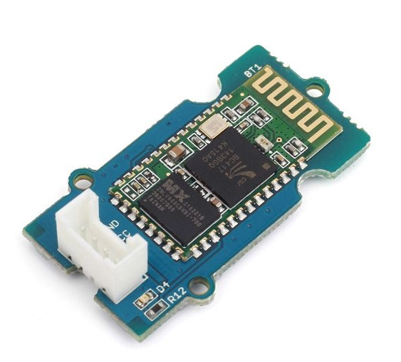
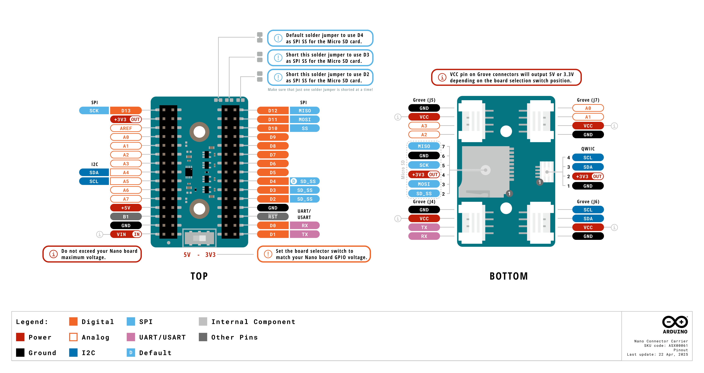
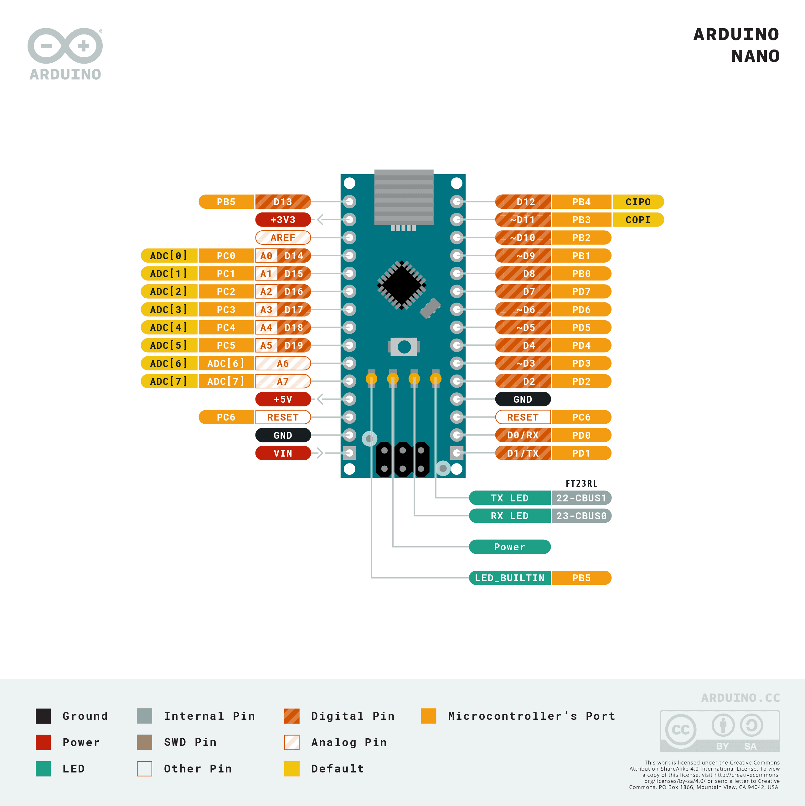

BTS CIEL — 2e Année • Électronique, Réseaux & Systèmes Communicants
TP : Communication Bluetooth (SPP), Bus I²C & Instrumentation Digilent Analog Discovery 3
Développement d'un pupitre de télé-exploitation sans fil sur Arduino Nano v3 — Liaison SoftwareSerial, Bus I²C, Mesures RSSI & Analyse de Gigue
⏱ Format : Fiche de Travail & Questions
🎯 Cible : Arduino Nano v3 (Carrier ASX00061)
📡 Protocole : Bluetooth Classic 3.0 (SPP) & Bus I²C
⚡ Instrumentation : Digilent Analog Discovery 3 (WaveForms)
📦 Ressources & Composants Matériels Mis à Disposition

Arduino Nano v3
ATmega328P @ 16 MHz, 5V TTL (Mini-USB natif)

Carrier ASX00061
Connecteur support Nano avec 4 ports Grove (J4, J5, J6, J7) & sélecteur S1

Grove Serial BT v3.0
Puce CSR BC417, SPP esclave, profil transparent 9600 bauds

Brochage Carrier ASX00061
Ports Grove J4 (UART D0/D1), J6 (I²C), J7 (A0/A1)
⚠️ Règle de Câblage Impérative sur le Support ASX00061
Ne jamais brancher le module Bluetooth sur le connecteur Grove J4 (UART D0/D1) : les broches D0/D1 sont directement couplées au convertisseur USB de l'Arduino Nano. Tout branchement sur J4 crée un conflit matériel rendant impossible le téléversement de programmes et l'utilisation de la console série du PC.
Solution retenue : Le module Bluetooth Grove est raccordé sur le port J7 (A0 / A1). Sur l'ATmega328P, les broches A0 et A1 sont de véritables entrées/sorties numériques (PORT C) supportant les interruptions de changement d'état (PCINT) nécessaires à la bibliothèque SoftwareSerial.
📋 DOCUMENT 1 : FICHE TRAVAIL DEMANDÉ (Activités Pratiques)
Cette fiche synthétique définit le cahier des charges opérationnel des 3 étapes pratiques à mener en binôme. Vous devez implémenter les configurations, relever les mesures radiofréquences et temporelles à l'Analog Discovery 3, et consigner vos résultats dans la Fiche Questions & Bilan Technique (Document 2).
1. Référentiel BTS CIEL & Compétences Visées
| Code |
Compétence du Référentiel |
Critères de Réussite & Tâches associées dans ce TP |
| C04 |
Analyser une structure matérielle et logicielle |
• Décoder les chronogrammes des liaisons série asynchrones (UART/SoftwareSerial) et synchrones (I²C).
• Justifier l'arbitrage matériel entre l'UART matériel USB (D0/D1) et le port série logiciel SoftwareSerial sur A0/A1 (connecteur J7 du carrier ASX00061).
• Analyser l'impact temporel de l'émulation SoftwareSerial (interruptions PCINT et charge CPU) sur le cadencement et la régularité du bus I²C.
• Analyser le protocole de commandes AT brutes sans caractère de terminaison (mode No line ending).
|
| C05 |
Concevoir une structure matérielle et logicielle |
• Développer l'algorithme de routage des données série entre l'USB natif (Serial) et le Bluetooth (BT_SERIAL).
• Développer un indicateur visuel de qualité de liaison (bargraphe dynamique du RSSI sur la matrice LED et écran OLED).
• Piloter sur un même bus I²C mutualisé (via Hub) l'afficheur OLED SSD1306, le clavier tactile et la matrice LED en minimisant la gigue temporelle.
|
| C06 |
Valider une structure matérielle et logicielle |
• Mettre en œuvre l'analyseur logique Digilent Analog Discovery 3 et le logiciel WaveForms.
• Configurer les décodeurs de protocoles UART et I²C sous WaveForms Logic Analyzer.
• Mesurer avec précision les temps bit, les niveaux de tension 5V TTL, les temps de montée et la gigue d'horloge I²C.
• Caractériser l'affaiblissement radio (RSSI en dBm) en fonction de la distance et renseigner la grille de recette technique.
|
| C07 |
Réaliser des maquettes et prototypes |
• Câbler les sous-ensembles modulaires Grove sur le carrier Arduino Nano ASX00061 et le Hub I²C, et raccorder les sondes MTE de l'Analog Discovery 3 en respectant la masse commune (GND).
|
2. Inventaire du Matériel et Architecture d'Instrumentation
2.1. Matériel utilisé
- 1x Carte microcontrôleur : Arduino Nano v3 (ATmega328P 8 bits, 16 MHz, 5V TTL, architecture Harvard AVR).
- 1x Platine d'extension : Arduino Nano Connector Carrier (Réf. ASX00061) intégrant 4 connecteurs Grove, 1 port Qwiic I²C 3.3V, 1 lecteur microSD SPI et un sélecteur de niveau logique S1 (+3.3V / +5V).
- 1x Module sans fil : Grove - Serial Bluetooth v3.0 (liaison série UART, profil SPP esclave, connecté sur le port Grove J7 : A0/A1).
- 1x Hub d'extension I²C : Grove - I2C Hub (4 ports) (démultiplicateur passif de bus I²C).
- 1x Clavier de saisie : Grove - 12 Key Capacitive I2C Touch Keypad (contrôleur I²C MPR121, adresse
0x5B).
- 1x Afficheur graphique : Grove - OLED Display 0.96" (128x64 pixels, contrôleur SSD1306, adresse I²C
0x3C).
- 1x Afficheur d'état : Grove - Matrice LED 8x8 (contrôleur I²C HT16K33, adresse
0x70).
- 1x Banc de mesure : Digilent Analog Discovery 3 (AD3) avec nappe MTE 30 broches + logiciel Digilent WaveForms.
- 1x Terminal client distant : Smartphone Android/iOS avec l'application Serial Bluetooth Terminal (ou PC avec adaptateur Bluetooth).
Carte Arduino Nano v3 originale (ATmega328P @ 16 MHz, Mini-USB / CH340 / FTDI)

Brochage officiel Arduino Nano (Broches D0/D1 UART, D2-D13 GPIO, A0-A7 Analog/Digital)
2.2. Carte d'extension Arduino Nano Connector Carrier (ASX00061)
L'Arduino Nano Connector Carrier (référence officielle ASX00061) est une carte porteuse conçue pour accueillir les cartes au facteur de forme Arduino Nano. Elle met à disposition des connecteurs standardisés Grove (Seeed Studio) et Qwiic (SparkFun), évitant les erreurs de raccordement sur plaque d'essai (breadboard).
Platine Arduino Nano Connector Carrier (ASX00061) - Vue de dessus
Brochage et implantation des 4 connecteurs Grove, du port Qwiic et du slot microSD
Description normalisée des connecteurs de la carte porteuse (ASX00061) :
Tous les connecteurs Grove possèdent 4 broches standardisées (Broche 1 = Jaune, Broche 2 = Blanc, Broche 3 = Rouge/VDD, Broche 4 = Noir/GND). Le tableau ci-dessous, issu du schéma structurel officiel (ASX00061-schematics.pdf), détaille l'affectation de chaque port :
| Désignation |
Type & Rôle |
Broche 1 (Fil Jaune) |
Broche 2 (Fil Blanc) |
Broche 3 (Rouge) |
Broche 4 (Noir) |
Remarques d'utilisation & Compatibilité |
| J4 |
Grove UART |
RX (D0 Nano) |
TX (D1 Nano) |
VSWITCH (5V) |
GND |
⚠️ CONFLIT USB : Relié en direct au convertisseur USB de l'Arduino Nano. Ne pas brancher le Bluetooth ici ! |
| J7 |
Grove Analog / Digital (A0, A1) |
A0 (PORTC 0 / D14) |
A1 (PORTC 1 / D15) |
VSWITCH (5V) |
GND |
✅ PORT RETENU POUR LE BLUETOOTH : Exploité en port série logiciel via SoftwareSerial. |
| J5 |
Grove Analog / Digital (A2, A3) |
A2 (PORTC 2 / D16) |
A3 (PORTC 3 / D17) |
VSWITCH (5V) |
GND |
Disponible pour d'autres capteurs analogiques ou une seconde liaison série logicielle. |
| J6 |
Grove I²C |
SCL (A5 Nano) |
SDA (A4 Nano) |
VSWITCH (5V) |
GND |
Bus I²C matériel standard (relié au Grove I2C Hub pour mutualiser l'OLED, le clavier et la matrice). |
| J8 |
Qwiic I²C (JST-SH 4 broches) |
GND |
+3.3V |
SDA (traduit 3.3V) |
SCL (traduit 3.3V) |
Connecteur 3.3V avec adaptateur de niveau logique bidirectionnel (pour capteurs Modulino / Qwiic). |
| J9 |
Lecteur microSD |
Lignes SPI : MOSI (D11), MISO (D12), SCK (D13), CS (D10) + translation push-pull |
Slot pour carte mémoire microSD (datalogging embarqué). |
| S1 |
Sélecteur de tension VSWITCH |
Interrupteur à glissière deux positions : +3.3V ou +5V |
RÉGLAGE IMPÉRATIF : À positionner sur 5V pour l'Arduino Nano classique (ATmega328P). |
2.3. Choix du port de communication (A0 / A1)
💡 Pourquoi privilégier le port A0 / A1 plutôt que l'UART natif (D0 / D1) ?
L'UART matériel (D0/D1) étant partagé avec l'interface USB pour le téléversement et le moniteur série, raccorder le module Bluetooth sur ces broches créerait un conflit matériel empêchant la programmation et corrompant les échanges. L'utilisation des broches A0/A1 configurées en liaison série logicielle via SoftwareSerial garantit une communication dédiée et totalement indépendante sans manipulation de câbles.
2.4. Schéma d'instrumentation Digilent AD3
3. Déroulement du TP — Activités Pratiques et Mesures
Objectif : Établir une passerelle bidirectionnelle (MultiSerial) entre la console USB du PC et le module sans fil Grove Bluetooth v3.0 raccordé sur la carte porteuse ASX00061.
- Enfichez l'Arduino Nano sur la platine support ASX00061. Vérifiez que l'interrupteur S1 est positionné sur 5V.
- Raccordez le module Grove - Serial Bluetooth v3.0 sur le connecteur Grove J7 (A0 / A1).
- Déclarez la liaison série logicielle
Serial1 (ou BT_Serial) avec SoftwareSerial sur les broches A1 (RX) et A0 (TX) :
- Pin 1 du port J7 (Fil Jaune) → broche A0 Nano reliée au RX du module (l'Arduino émet).
- Pin 2 du port J7 (Fil Blanc) → broche A1 Nano reliée au TX du module (l'Arduino reçoit).
- Développez le programme passerelle :
- Liaison USB matérielle
Serial configurée à 115200 bauds.
- Liaison série logicielle
Serial1 configurée à 9600 bauds (vitesse d'usine CSR BC417).
- Redirection bidirectionnelle transparente :
Serial ↔ Serial1.
📦 Livrable attendu :
Code source fonctionnel téléversé sur le Nano. Ouverture du Moniteur Série Arduino (115200 bauds) et vérification du pont de communication.
Objectif : Configurer et auditer les paramètres radiofréquences du module Grove Bluetooth v3.0 en mode commande AT non appairé (LED d'état clignotante).
Réglage impératif du terminal : Sélectionner impérativement No line ending (Pas de fin de ligne) dans le Moniteur Série. Le contrôleur CSR BC417 rejette tout caractère \r ou \n en fin de commande.
Exécutez la séquence de commandes AT suivantes et relevez les réponses :
| Commande AT |
Action & Syntaxe |
Réponse attendue / Format |
AT |
Test de communication de base |
OK |
AT+VERSION |
Interrogation du firmware embarqué |
Ex: +VERSION=2.0... ou version Seeed |
AT+ADDR? ou AT+LADDR |
Relevé de l'adresse MAC matérielle unique (BD_ADDR) |
12 caractères hexadécimaux (ex : 0013,EF,001234) |
AT+NAME<Nom> |
Renommer le module avec votre identifiant de binôme |
Ex: AT+NAMECIEL_B1 → Réponse OKsetname |
AT+PIN<Code> |
Définir le code secret d'appairage (4 chiffres) |
Ex: AT+PIN1234 → Réponse OKsetPIN |
AT+ROLE0 |
Forcer le rôle Esclave (Slave) (valeur par défaut) |
+ROLE=0 ou OK |
📦 Livrable attendu :
Relevé complet des paramètres d'usine et personnalisés (Nom, PIN, MAC BD_ADDR) sur la Fiche Questions.
Objectif : Réceptionner des données textuelles transmises en Bluetooth depuis un terminal distant (PC ou smartphone) pour les afficher en temps réel sur l'écran OLED I²C, renvoyer les frappes du clavier capacitif I²C vers le terminal distant, caractériser les signaux à l'analyseur logique Digilent AD3, et évaluer la portée radio (RSSI) ainsi que les contraintes temporelles de SoftwareSerial.
3.1. Passerelle Bidirectionnelle : Terminal distant ↔ Écran OLED & Clavier I²C
Appairage initial : Activez le Bluetooth sur votre terminal distant (smartphone ou PC), recherchez votre module (ex. : CIEL_B1) et saisissez votre code PIN (ex. : 1234). La LED bleue cesse de clignoter et reste allumée en continu (liaison RFCOMM active).
Une fois la liaison Bluetooth établie avec votre terminal distant (application Serial Bluetooth Terminal sur smartphone ou logiciel PC fourni), la communication est exploitée dans les deux sens de transmission :
- Sens Descendant (Terminal → Pupitre Nano) :
Le terminal envoie des messages textuels ASCII (ex. : "CIEL_TEST", "TEMP=23.5C"). L'Arduino Nano lit ces octets sur BT_SERIAL (broche A1/RX) et les retransmet via le bus I²C (A4/A5) vers l'afficheur OLED SSD1306 (adresse 0x3C) où ils s'affichent instantanément.
- Sens Montant (Clavier tactile → Terminal distant) :
L'utilisateur saisit un code ou appuie sur les touches du clavier capacitif 12 touches Grove (contrôleur MPR121, adresse I²C 0x5B relié au Hub). L'Arduino Nano lit la touche pressée sur le bus I²C et la transmet immédiatement sur la liaison sans fil via BT_SERIAL.print(...) (broche A0/TX). Le caractère ou code tapé s'affiche en direct sur le terminal du smartphone ou du PC !
🤖 Pistes de recherche & Conception assistée par IA
Cahier des charges logiciel : Développer la routine bidirectionnelle gérant conjointement la réception Bluetooth vers l'afficheur OLED et l'acquisition du clavier tactile I²C vers l'émission Bluetooth, sans blocage de la boucle loop().
- Mots-clés d'investigation :
SoftwareSerial.available(), Adafruit_SSD1306.h, Adafruit_MPR121.h (ou lecture directe des registres 0x00 / 0x01 via Wire.h), adresse I2C 0x5B, anti-rebond (debouncing), buffer circulaire.
- Suggestion de prompt pour votre assistant IA :
« Pour une carte Arduino Nano v3 (ATmega328P), écris un programme en C++ Arduino gérant une passerelle bidirectionnelle :
1) Il lit en continu les messages textuels reçus sur SoftwareSerial (A1=RX, A0=TX à 9600 bauds) et les affiche sur un écran OLED SSD1306 I2C (adresse 0x3C).
2) Il interroge un clavier capacitif Grove MPR121 sur le même bus I2C (adresse 0x5B) : dès qu'une touche (0-9, *, #) est pressée, il l'envoie sur SoftwareSerial pour qu'elle s'affiche sur le terminal distant.
Le code doit être non-bloquant (aucun delay), n'émettre qu'un seul caractère par appui (anti-rebond) et optimiser la mémoire SRAM. »
- Esprit critique & Validation : Analysez comment l'IA traite le partage du bus I²C entre l'afficheur (
0x3C) et le clavier (0x5B). Comment évite-t-elle l'envoi continu d'octets répétés si l'opérateur laisse son doigt posé sur une touche capacitive ? Adaptez le code et téléversez-le sur votre Nano.
Mesure et décodage des trames au Digilent Analog Discovery 3 (WaveForms) :
- Dans WaveForms Logic Analyzer, activez simultanément trois décodeurs de bus :
- Liaison Bluetooth RX (Terminal → Nano) : Voie
DIO 0 (reliée à A1 / RX Nano), décodeur UART à 9600 bauds 8N1.
- Liaison Bluetooth TX (Nano → Terminal) : Voie
DIO 1 (reliée à A0 / TX Nano), décodeur UART à 9600 bauds 8N1.
- Bus I²C mutualisé (OLED & Clavier) : Horloge
DIO 2 (SCL sur A5) et Données DIO 3 (SDA sur A4), décodeur I²C.
- Test Sens 1 (Terminal → OLED) : Depuis le terminal, envoyez la lettre
'A' (ASCII 0x41) et déclenchez sur DIO 0 : observez la réception série puis l'écriture consécutive vers l'adresse 0x3C.
- Test Sens 2 (Clavier → Terminal) : Tapez un chiffre sur le clavier (ex. :
'5', ASCII 0x35) et déclenchez sur l'activité I²C (adresse 0x5B) : observez la lecture I²C puis l'émission série sur DIO 1 vers le Bluetooth.
📦 Relevés de trames bidirectionnelles attendus :
1. Capture WaveForms du sens descendant (Bluetooth RX sur
DIO 0 → écriture OLED sur
DIO 2/DIO 3).
2. Capture WaveForms du sens montant (lecture clavier I²C sur
DIO 2/DIO 3 → émission Bluetooth TX sur
DIO 1).
3.2. Caractérisation de la portée radio et mesure du RSSI avec le smartphone
Le RSSI (Received Signal Strength Indicator), exprimé en dBm (décibels par rapport à 1 mW), quantifie la puissance radiofréquence captée par le récepteur. C'est une valeur négative : plus elle se rapproche de 0, plus le signal est puissant (ex. : -50 dBm correspond à un signal excellent, -88 dBm est proche de la perte de liaison).
Protocole expérimental de mesure à différentes distances :
- Ouvrez l'application Serial Bluetooth Terminal sur votre smartphone appairé au module de la maquette.
- Affichez le niveau de signal en temps réel (RSSI en dBm) fourni par l'application.
- Tout en maintenant la communication active, déplacez-vous progressivement dans la salle ou le couloir en ligne de vue directe pour relever le RSSI :
Grille de relevés expérimentaux de portée :
| Distance d |
1 mètre (Réf. d0) |
2 mètres |
5 mètres |
8 mètres |
Distance de Décrochage (dmax) |
| RSSI mesuré (dBm) |
................... dBm |
................... dBm |
................... dBm |
................... dBm |
................... dBm (à ...... m) |
Calcul et analyse d'atténuation :
1. Calculez l'atténuation mesurée entre 1 m et 5 m : Δ
Pmesurée =
RSSI(5 m) −
RSSI(1 m) = ................. dB.
2. La formule théorique en champ libre (modèle d'atténuation logarithmique) donne Δ
Pth = 10 · 2 · log
10(5/1) ≈ 14 dB.
Pourquoi l'atténuation mesurée en environnement réel est-elle généralement plus élevée que cette valeur théorique ? (Citez au moins deux phénomènes physiques concrets : obstacles, réflexions, absorption par le corps humain).
3.3. Analyse de l'impact temporel de SoftwareSerial sur le bus I²C
Sur l'Arduino Nano (ATmega328P), l'UART matériel étant réservé à l'USB, la liaison Bluetooth utilise la bibliothèque SoftwareSerial. Cette bibliothèque émule la réception série au moyen d'interruptions sur changement d'état (PCINT) :
- À 9600 bauds, la réception d'un seul octet (10 bits) bloque le processeur dans sa routine d'interruption pendant environ 1,04 ms.
- Durant cette phase, les autres interruptions sont bloquées, provoquant un étirement forcé du signal d'horloge I²C SCL (phénomène de gigue temporelle / jitter).
Mise en évidence expérimentale sous WaveForms :
- Dans WaveForms, configurez la mesure automatique de la période sur le canal
DIO 2 (A5 / SCL).
- Observez l'horloge I²C au repos (rafraîchissement de l'OLED seul), puis transmettez un flux continu de texte depuis le smartphone.
- Mesurez avec les curseurs X1 et X2 la durée maximale de blocage (ΔT) sur la ligne SCL.
Question 3.3 (Analyse temporelle & Synthèse d'architecture embarquée) :
1. Relevez la période nominale du bus I²C au repos :
TSCL_nominale = ......................... µs (fréquence réelle = ......................... kHz).
2. Relevez la gigue maximale (Δ
Tmax) mesurée sur SCL pendant la réception Bluetooth continue : Δ
Tmax = ......................... µs.
3. Justifiez le lien direct entre Δ
Tmax et la durée de transmission d'un octet sous
SoftwareSerial à 9600 bauds (10 bits à 104,17 µs/bit).
Synthèse d'ingénierie (Systèmes critiques & Architecture matérielle) :
Dans les applications industrielles ou biomédicales (pilotage de moteurs, respirateurs, surveillance cardiaque), les tâches doivent s'exécuter de façon
strictement déterministe (aucun retard imprévisible toléré).
a) Expliquez pourquoi une liaison série émulée par logiciel (comme
SoftwareSerial) est proscrite dans un système temps réel critique.
b) Quelles solutions d'architecture matérielle permettent de s'affranchir totalement de ce blocage ?
(Précisez le rôle de composants tels qu'un contrôleur DMA, des UART matériels avec buffers FIFO, ou une architecture multi-cœurs).
✍️ DOCUMENT 2 : FICHE QUESTIONS & BILAN TECHNIQUE (Évaluation)
📝 Consignes pour l'Étudiant
Cette fiche d'évaluation et de synthèse est à compléter individuellement ou en binôme tout au long du déroulement des activités pratiques (Étapes 1 à 3). Renseignez l'intégralité des mesures demandées, justifiez vos réponses par des arguments techniques rigoureux (termes normatifs, formules et unités) et soignez la clarté de vos raisonnements.
NOM Prénom Étudiant 1 : .............................................................. | Étudiant 2 : .............................................................. | Date : ....................
Partie A : Architecture Matérielle, Bus Série & Commandes AT (Étapes 1 & 2)
Question A.1 : Sur la platine support
Arduino Nano Connector Carrier (ASX00061), expliquez précisément pourquoi le connecteur
J4 (UART D0/D1) ne doit pas être utilisé pour dialoguer avec le module Bluetooth lorsque le Nano est raccordé en USB à un PC.
Détaillez les conséquences matérielles sur la programmation (bootloader) et sur le moniteur série.
Question A.2 : En vous référant à l'architecture interne du microcontrôleur
ATmega328P, justifiez pourquoi les broches repérées
A0 et A1 du connecteur Grove
J7 peuvent être exploitées pour une liaison série avec la bibliothèque
SoftwareSerial.
À quel port interne d'E/S (PORT B, C ou D) appartiennent-elles ? Quel mécanisme matériel d'interruption permet de détecter le bit de Start ?
Question A.3 : Complétez le tableau d'audit des paramètres relevés lors de l'exécution des commandes AT sur votre module Grove Bluetooth v3.0 :
| Paramètre |
Commande AT envoyée |
Réponse brute du module |
Signification technique / Valeur retenue |
| Adresse MAC (BD_ADDR) |
.................... |
........................................ |
Identifiant physique unique sur 48 bits (IEEE 802.15.1) |
| Nom personnalisé |
.................... |
........................................ |
Nom d'annonce visible lors du scan distant |
| Code PIN de sécurité |
.................... |
........................................ |
Clé d'authentification pour l'appairage (Legacy Pairing) |
| Rôle réseau |
.................... |
........................................ |
0 = Esclave (Slave) / 1 = Maître (Master) |
| Débit série UART |
.................... |
........................................ |
Vitesse de communication avec l'ATmega328P (bauds) |
Question A.4 : Pourquoi la configuration du terminal en mode
No line ending (
Pas de fin de ligne) est-elle impérative pour ce module lors de la configuration AT ? Que se produit-il techniquement si l'on transmet les caractères
\r\n (CR+LF) ?
Partie B : Appairage, Passerelle Bidirectionnelle (OLED & Clavier I²C), Mesures AD3 & Portée RSSI (Étape 3)
Question B.1 (Appairage & Profil RFCOMM SPP) :
1. Décrivez l'évolution visuelle de la LED d'état bleue du module Grove Bluetooth entre le mode veille non connecté et le mode appairé connecté.
2. Quel est le rôle du protocole
RFCOMM dans le profil Bluetooth SPP (Serial Port Profile) par rapport à un câble série RS-232 physique ?
Question B.2 (Validation de la communication bidirectionnelle au Digilent AD3) :
À l'aide des décodeurs de bus configurés sous
WaveForms Logic :
- Sens descendant (Terminal → OLED) : Relevez la durée d'acquisition d'un octet Bluetooth sur
DIO 0 (9600 bauds 8N1) : Toctet = ......................... ms. Sur le bus I²C (DIO 2/3), relevez l'adresse de l'afficheur OLED (0x........) et mesurez le temps de latence avant l'envoi de la trame d'affichage.
- Sens montant (Clavier tactile → Terminal distant) : Quelle est l'adresse I²C du contrôleur MPR121 du clavier :
0x........ ? Lors de l'appui sur une touche, décrivez la succession des signaux observés entre la transaction de lecture I²C et l'émission du caractère ASCII sur la broche TX (DIO 1).
- Mutualisation du bus I²C : Pourquoi l'afficheur OLED (
0x3C) et le clavier (0x5B) peuvent-ils partager les mêmes lignes SDA/SCL sans conflit ? Quel octet d'en-tête de protocole garantit que seul le composant concerné réagit ?
Question B.3 (Grandeur physique et modélisation du RSSI) :
1. Donnez la relation mathématique permettant de convertir une puissance reçue
Pr exprimée en milliwatts (mW) en décibels-milliwatts (dBm) :
PdBm = 10 × log10(Pr / 1 mW)
2. Pourquoi le RSSI mesuré sur un récepteur radio est-il systématiquement
négatif ? Calculez la puissance en dBm correspondant à 1 μW (10
-6 W) puis à 1 nW (10
-9 W).
3. Complétez l'échelle normalisée de qualité de signal :
| Plage de RSSI |
Qualification du signal |
Comportement de la liaison Bluetooth |
| ≥ -50 dBm |
Excellente (Proximité immédiate) |
Débit maximal, zéro perte de paquet, liaison très stable |
| -50 dBm à -70 dBm |
Bonne / Nominale |
Liaison industrielle fiable et sans latence perceptible |
| -70 dBm à -85 dBm |
Moyenne / Dégradée |
Augmentation du taux d'erreur, ralentissement des flux |
| < -88 dBm |
Critique / Seuil limite |
Limite de sensibilité du récepteur, risque de déconnexion |
Question B.4 (Campagne de mesures de portée au smartphone) :
Reportez les valeurs de RSSI relevées avec l'application smartphone lors du déplacement :
| Distance d |
1 mètre (Réf. d0) |
2 mètres |
5 mètres |
8 mètres |
Distance de Décrochage (dmax) |
| RSSI mesuré (dBm) |
................... dBm |
................... dBm |
................... dBm |
................... dBm |
................... dBm (à ...... m) |
Calculez l'atténuation mesurée entre 1 m et 5 m : Δ
Pmesurée =
RSSI(5 m) −
RSSI(1 m) = ................. dB.
Comparez avec la valeur théorique en champ libre (Δ
Pth = 10 · 2 · log
10(5/1) ≈ 14 dB). Pourquoi l'atténuation en atelier est-elle plus prononcée ?
Question B.5 (Impact physique des obstacles à 2,4 GHz) : Pourquoi l'interposition d'un obstacle métallique (armoire, porte blindée) ou du corps humain provoque-t-elle une chute brutale du RSSI à 2,4 GHz ? Citez deux phénomènes physiques distincts (réflexion / cage de Faraday et absorption diélectrique par l'eau corporelle).
Partie C : Synthèse d'Ingénierie & Bilan de Qualification (Bilan du TP)
Question C.1 (Analyse de la gigue temporelle SoftwareSerial) :
1. Rappelez la durée du blocage (Δ
Tmax) mesurée sur l'horloge I²C SCL pendant la réception d'un flux continu Bluetooth : Δ
Tmax = ......................... µs.
2. Expliquez pourquoi ce blocage correspond exactement au temps de traitement de l'interruption (ISR) de
SoftwareSerial pour acquérir un octet complet à 9600 bauds.
Question C.2 (Contraintes des systèmes critiques & Solutions d'architecture) :
Dans les équipements industriels ou biomédicaux temps réel (commande de moteur pas à pas, surveillance de pression respiratoire) :
a) Pourquoi l'utilisation d'une émulation série logicielle comme
SoftwareSerial est-elle formellement proscrite ? Quel risque fait-elle peser sur les asservissements critiques ?
b) Citez et détaillez
deux solutions d'ingénierie matérielle permettant de s'affranchir de ce problème sans bloquer la CPU :
- Solution 1 (Microcontrôleur & Périphériques matériels) : ............................................................................................................
- Solution 2 (Tampons matériels & DMA ou Co-processeur) : ............................................................................................................
Question C.3 (Sécurité de l'appairage Bluetooth Legacy) :
Le module Grove Bluetooth v3.0 utilise le protocole d'authentification
Legacy Pairing avec un code PIN fixe à 4 chiffres (ex. :
1234).
1. Quel est le nombre total de combinaisons possibles pour un code à 4 chiffres décimaux ? Combien de temps mettrait un attaquant pour tester l'ensemble des clés en force brute hors-ligne (moins de 0,1 s) ?
2. Quelle mesure de sécurité préconisez-vous pour moderniser la sécurité de cet équipement (normes Bluetooth 4.2+ Secure Connections, algorithmes ECDH / AES-CCM) ?
Grille d'Évaluation des Compétences du Référentiel BTS CIEL
| Compétence |
Indicateurs d'Évaluation & Tâches Qualifiées |
Barème |
Note / Validation |
| C07 - Réalisation |
Câblage soigné sur le carrier Arduino Nano ASX00061 (port J7) et le Hub I²C, respect strict de la masse commune (GND) et raccordement correct des sondes MTE de l'Analog Discovery 3. |
/3 pts |
|
| C04 - Analyse |
Compréhension du port SoftwareSerial A0/A1 (PORT C / PCINT), audit rigoureux des commandes AT (MAC, PIN, Nom) et justification de l'absence de conflit USB sur D0/D1. |
/5 pts |
|
| C05 - Conception |
Développement de la passerelle série vers affichage OLED I²C sans blocage CPU, utilisation raisonnée de l'assistance IA et pertinence des adaptations logicielles. |
/5 pts |
|
| C06 - Validation |
Maîtrise de l'analyseur logique Digilent AD3 (décodeurs UART & I²C, triggers, curseurs de gigue temporelle), pertinence des relevés de portée RSSI et analyse des obstacles. |
/5 pts |
|
| C01 - Communication |
Rigueur des réponses, clarté du compte-rendu d'essai, précision du vocabulaire technique et qualité de la synthèse d'ingénierie. |
/2 pts |
|
| NOTE FINALE GLOBALE : |
/20 pts |
........ / 20 |